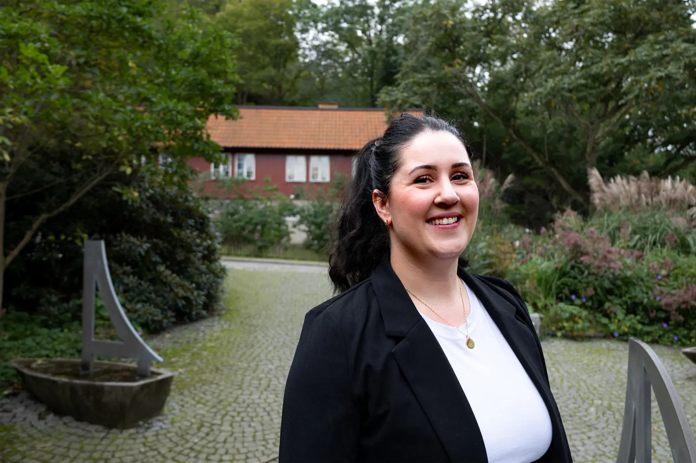
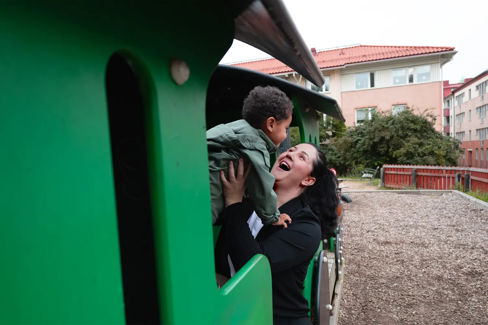

Porträtt
Att vara ”oförklarligt barnlös”
– Det jobbigaste med IVF är inte IVF. Det är att vara ofrivilligt barnlös och inte kunna kontrollera sin framtid
Natalie och hennes man Ahmed försökte skaffa barn i flera år. De var unga, friska och läkarna kunde inte förklara varför paret inte kunde bli med barn. Det tog paret fyra IVF för att lyckas bli gravida.

Natalie Nilsson, håller sin ettårige son Anwar bredvid sig. Han är glad och pratar för sig själv när han springer för att räkna stenarna på vägen och de nedfallna löven under träden. Pappa Ahmed är på jobbet och Natalie har precis hämtat Anwar från dagis. Det ser ut som ett vanligt familjefoto, en mammas vardag. Det var dock inte självklart att den här dagen skulle komma. Natalie är trettiotre år gammal. Hon är frisk och har ett bra liv, men länge trodde hon aldrig att hon skulle få barn.
Natalie och Ahmed började försöka få ett barn runt 2017. Efter ungefär ett år utan framgång vände de sig till landstinget - eller provrörsbefruktning. Hos Landstinget får du tre gratisförsök.
– Från början tyckte jag nog inte att det var så värst jobbigt, man har ju så stora förhoppningar på att det ska fungera. Det vara bara att göra, man stänger nog av sig lite och tvingar sig själv genom processen, förklarar Natalie.
Inget hände vid första försöket. Inget hände vid andra försöket, och ju längre det gick – desto svårare blev det för Natalie att låtsas som att inget var fel och fortsätta kämpa.
För att få genomgå IVF måste du uppfylla vissa krav. Du måste prova själv i minst ett år, du måste bo på samma adress och ditt BMI får inte vara för högt. När du börjar behöver du några prover och en gynekologisk undersökning för kolla så att allt ser rätt ut.
– Allt såg bra ut, på oss båda, så vi blev kallade ”oförklarligt barnlösa”. En sak som störde mig och spökade i min hjärna var rädslan att det fanns en annan anledning – att man inte passar som par, berättar Natalie.
För Natalie blev det en intern kamp att hålla inne eller låtsas att hon mådde bra och försöka slåss med alla hormoner.
– Jag är en problemlösare in i märgen och försöker alltid hitta olika sätt att fixa saker. Men detta kunde jag inte kontrollera. Inte ens lite… att inte själv kunna bestämma över sin framtid var brutalt för mig. Det visade sig i tankarna jag började få. Jag började intala mig själv att jag inte alls vill ha barn och att jag inte trivs i min relation.
Efter undersökningen får paret behandling. De ordineras olika mediciner som tas genom en spruta i magen och ibland besökte de en klinik för att kontrollera äggstockarnas status. När insättningsdagen kom fick Natalies man inte följa med henne in.
– Jag låg och grät. Inte bara för det gjorde ont utan för jag tyckte att det var jobbigt mentalt, berättar Natalie.
När äggplockningen är klar vet du omedelbart hur många ägg de tog ut. Natalie tar ut tio-tolv stycken varje gång, vilket är normalt. Men antalet ägg garanterar ingenting.
– Ett mantra som ständigt sägs av läkare är ”allt som krävs är ett ägg, det gyllene ägget”, förklarar Natalie.
Redan dagen efter får du veta hur många ägg som överlevde befruktningen. För Natalie brukar de vara sex stycken – vilket fortfarande är bra. Nu får du vänta ytterligare några dagar för nu ska de se hur cellerna delar sig i ägget. Vissa slutar utvecklas och vissa delar sig onormalt eller långsamt. Det sista steget är insättning.
– Insättningen gör inte ont, känns som ett gyn-besök. Men sedan måste man vänta i 14 dagar för att se om det har fungerat. Dessa 14 dagar är fruktansvärda. Det jobbigaste med IVF är inte IVF. Det är att vara ofrivilligt barnlös och inte kunna kontrollera sin framtid.

Men när telefonen ringde var det fortfarande en besvikelse – det tredje försöket hade inte lyckats. Efter tre misslyckade försök hos landstinget stannade paret. Vad händer nu?
– Jag började tveka på hela mitt liv. Jag funderade på om jag inte ville ha barn och om jag skulle lämna min man. Då är jag ju inte ofrivilligt barnlös och då jag har själv bestämt min framtid.
Natalie var inte redo att ge upp än. Paret bestämde sig till slut för att ta ett lån och ge det ett sista försök på en privat klinik. Kliniken garanterade pengarna tillbaka om det inte lyckades på tre försök och paret var villiga att ta den chansen – trots att oddsen var emot dem.
Den 19 augusti 2022 föddes en liten pojke, Anwar. Den lille sonen som glatt leker med sin mamma på lekplatsen.